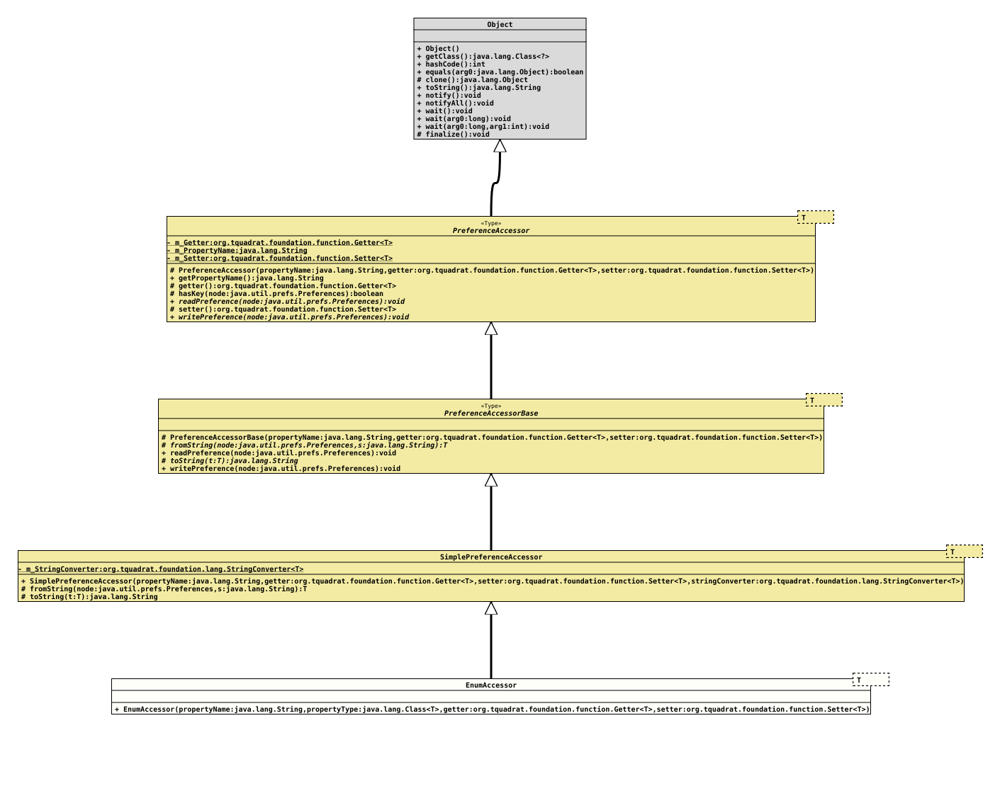

Class EnumAccessor<T extends Enum<T>>
java.lang.Object
org.tquadrat.foundation.config.spi.prefs.PreferenceAccessor<T>
org.tquadrat.foundation.config.spi.prefs.PreferenceAccessorBase<T>
org.tquadrat.foundation.config.spi.prefs.SimplePreferenceAccessor<T>
org.tquadrat.foundation.config.spi.prefs.EnumAccessor<T>
- Type Parameters:
T- The concrete data type that is handled by this preference accessor type implementation.
@ClassVersion(sourceVersion="$Id: EnumAccessor.java 910 2021-05-06 21:38:06Z tquadrat $")
@API(status=STABLE,
since="0.0.1")
public final class EnumAccessor<T extends Enum<T>>
extends SimplePreferenceAccessor<T>
The implementation of
PreferenceAccessor
for classes that extends
Enum.- Author:
- Thomas Thrien (thomas.thrien@tquadrat.org)
- Version:
- $Id: EnumAccessor.java 910 2021-05-06 21:38:06Z tquadrat $
- Since:
- 0.0.1
- UML Diagram
-

UML Diagram for "org.tquadrat.foundation.config.spi.prefs.EnumAccessor"
{kind=link}
-
Constructor Summary
Constructors -
Method Summary
Methods inherited from class SimplePreferenceAccessor
fromString, toStringMethods inherited from class PreferenceAccessorBase
readPreference, writePreferenceMethods inherited from class PreferenceAccessor
getPropertyName, getter, hasKey, setter
-
Constructor Details
-
EnumAccessor
-